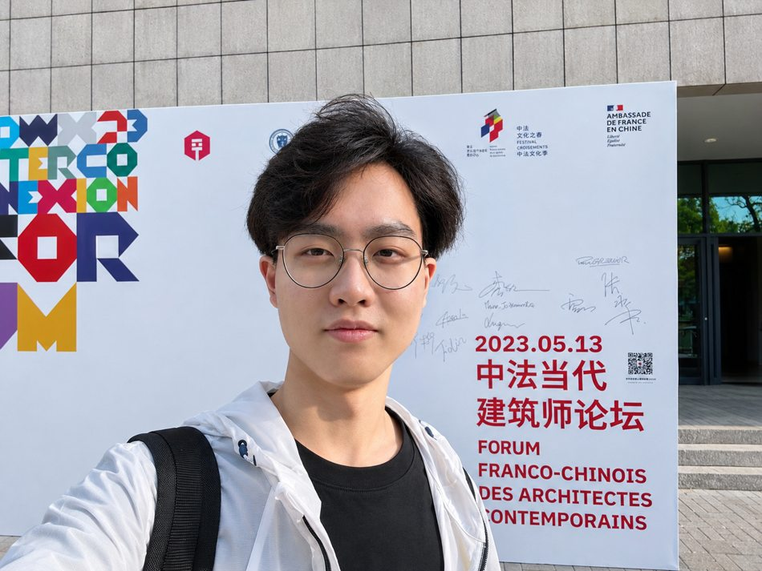
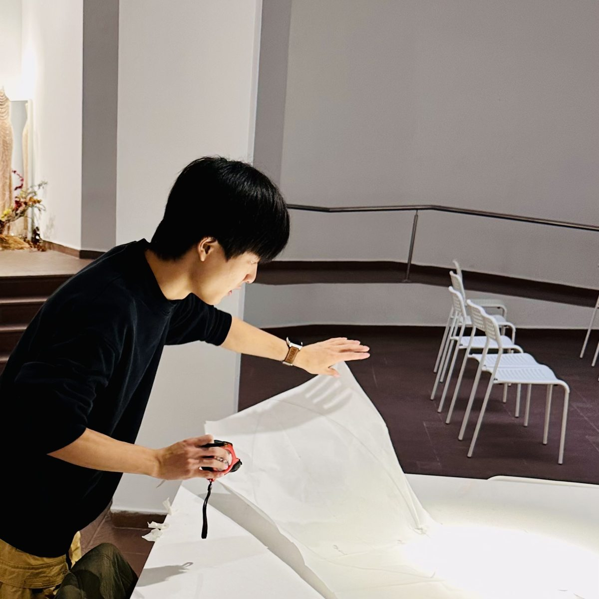

Jinlin
Li.
Architecture · Art · Interdisciplinary Research
I am an architecture graduate student and multidisciplinary creative practitioner working across spatial design, cultural projects and visual research.
My interests connect architectural heritage, adaptive reuse, art installations and the ways people experience built environments. I explore the relationship between design, technology and human behaviour through research and practice.

Design is a way of
connecting worlds.

I work between architecture, artistic practice and cultural collaboration, moving from analytical drawings and digital environments to physical spaces and installations.
I am currently pursuing master's studies in Architecture at Cracow University of Technology, with a focus on heritage protection.
Read my background ↗Selected work.
across disciplines and scales.
Seven projects include selected drawings, visualisations or prototype photographs. Entries still awaiting documentation are labelled. Design proposals are distinguished from prototype and process photographs.
About me.
I work at the intersection of architecture, visual culture, creative practice and interdisciplinary research.
My experience spans architectural design projects, adaptive reuse, cultural programming and experimental spatial installations. I am interested in how heritage, emerging technologies and human behaviour shape our experience of space.
I hold a bachelor's degree in Architecture from Cracow University of Technology and am pursuing graduate studies in architecture with an interest in heritage protection.
CV & expertise.
Education
Cracow University of Technology · Heritage Protection
Cracow University of Technology
Selected capabilities
Architectural design, adaptive reuse, spatial concepts, visual communication
Rhino, Grasshopper, AutoCAD, QGIS, Blender, Unreal Engine, TouchDesigner
Interdisciplinary coordination, exhibition concepts and cultural project development
A downloadable CV will be added after final review.
Have a project
in mind?
Open to conversations on architecture, research, art and collaborative projects.